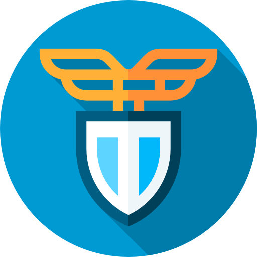

<!-- src/app/pages/home/home.component.html -->
<div class="text-center p-4 sm:p-6 md:p-10 dark:text-gray-200">
  <div class="flex justify-center align-middle items-center">
    
    
    
  </div>

  <h1 class="text-3xl sm:text-4xl font-bold mb-6 text-gray-800 dark:text-gray-100">Benvenuti su DajeFra!</h1>
  <p class="text-lg mb-8 text-gray-600 dark:text-gray-300">Testa le tue conoscenze e traccia i progressi.</p>

  <div *ngIf="pausedQuiz" class="mb-6">
    <button (click)="resumePausedQuiz()"
      class="w-full sm:w-auto inline-block bg-teal-500 hover:bg-teal-600 text-white dark:bg-teal-600 dark:hover:bg-teal-500 font-bold py-3 px-6 rounded-lg text-lg sm:text-xl shadow-md hover:shadow-lg transition duration-150 animate-pulse">
      <fa-icon class="mr-2" [icon]="faPlay"></fa-icon>
      Riprendi il quiz precedente
    </button>
  </div>

  <div class="mt-4 inline-grid grid-cols-1 sm:grid-cols-2 md:grid-cols-3 gap-4">
    <button
      class="w-full inline-block bg-green-500 hover:bg-green-600 text-white dark:bg-green-600 dark:hover:bg-green-500 font-bold py-3 px-6 rounded-lg text-lg sm:text-xl shadow-md hover:shadow-lg transition duration-150 text-center"
      [routerLink]="'/quiz/setup'" routerLinkActive="active">
      <fa-icon class="mr-2" [icon]="faAdd"></fa-icon>
      Nuovo Quiz
    </button>
    <button
      class="w-full inline-block bg-blue-500 hover:bg-blue-600 text-white dark:bg-blue-600 dark:hover:bg-blue-500 font-bold py-3 px-6 rounded-lg text-lg sm:text-xl shadow-md hover:shadow-lg transition duration-150 text-center"
      [routerLink]="'/quiz/history'" routerLinkActive="active">
      <fa-icon class="mr-2" [icon]="faHistory"></fa-icon>
      Storico Quiz
    </button>
    <button
      class="w-full inline-block bg-yellow-500 hover:bg-yellow-600 text-white dark:bg-yellow-600 dark:hover:bg-yellow-500 dark:text-gray-900 font-bold py-3 px-6 rounded-lg text-lg sm:text-xl shadow-md hover:shadow-lg transition duration-150 text-center"
      [routerLink]="'/statistics'" routerLinkActive="active">
      <fa-icon class="mr-2" [icon]="faBarChart"></fa-icon>
      Statistiche
    </button>
    <button
      class="w-full inline-block bg-orange-500 hover:bg-orange-600 text-white dark:bg-orange-600 dark:hover:bg-orange-500 font-bold py-3 px-6 rounded-lg text-lg sm:text-xl shadow-md hover:shadow-lg transition duration-150 text-center"
      [routerLink]="'/study-focus'" routerLinkActive="active">
      <fa-icon class="mr-2" [icon]="faMagnifyingGlass"></fa-icon>
      Aree da Approfondire
    </button>
    <button
      class="w-full inline-block bg-purple-500 hover:bg-purple-600 text-white dark:bg-purple-600 dark:hover:bg-purple-500 font-bold py-3 px-6 rounded-lg text-lg sm:text-xl shadow-md hover:shadow-lg transition duration-150 text-center"
      [routerLink]="'/favorites'" routerLinkActive="active">
      <fa-icon class="mr-2" [icon]="faStar"></fa-icon>
      Quiz Preferiti
    </button>
    <!-- Button for Yesterday's Problematic Questions -->
    <button (click)="startYesterdayProblematicQuiz()"
      class="w-full inline-block bg-red-500 hover:bg-red-600 text-white dark:bg-red-600 dark:hover:bg-red-500 font-bold py-3 px-6 rounded-lg text-lg sm:text-xl shadow-md hover:shadow-lg transition duration-150 text-center">
      <fa-icon class="mr-2" [icon]="faUndoAlt"></fa-icon>
      Rivedi Errori di IERI ({{ yesterdayProblematicQuestionIds.length }})
    </button>
    <button (click)="startTodayProblematicQuiz()"
      class="w-full inline-block bg-red-500 hover:bg-red-600 text-white dark:bg-red-600 dark:hover:bg-red-500 font-bold py-3 px-6 rounded-lg text-lg sm:text-xl shadow-md hover:shadow-lg transition duration-150 text-center">
      <fa-icon class="mr-2" [icon]="faUndoAlt"></fa-icon>
      Rivedi Errori di OGGI ({{ todayProblematicQuestionIds.length }})
    </button>
    <!-- End Button -->

    <!-- NEW: Button for Never Encountered Questions -->
    <button (click)="startNeverEncounteredQuiz()"
      [disabled]="neverEncounteredQuestionIds.length === 0 || isLoadingModal"
      class="flex w-full inline-block bg-cyan-500 hover:bg-cyan-600 text-white dark:bg-cyan-600 dark:hover:bg-cyan-500 font-bold py-3 px-6 rounded-lg text-lg sm:text-xl shadow-md hover:shadow-lg transition duration-150 text-center disabled:opacity-50 disabled:cursor-not-allowed">
      <fa-icon *ngIf="!isLoadingModal" class="mr-2" [icon]="faQuestion"></fa-icon> <!-- Or another suitable icon -->
      <svg *ngIf="isLoadingModal" class="mr-3 -ml-1 size-5 animate-spin text-white" viewBox="0 0 24 24"
        xmlns="http://www.w3.org/2000/svg" fill="none">
        <circle class="opacity-25" cx="12" cy="12" r="10" stroke="currentColor" stroke-width="4"></circle>
        <path class="opacity-75" fill="currentColor"
          d="M4 12a8 8 0 018-8V0C5.373 0 0 5.373 0 12h4zm2 5.291A7.962 7.962 0 014 12H0c0 3.042 1.135 5.824 3 7.938l3-2.647z">
        </path>
      </svg>
      {{ isLoadingModal ? 'Recupero domande in corso...' : 'Domande Mai Viste ( ' + neverEncounteredQuestionIds.length +
      ')' }}

    </button>
    <!-- END NEW Button -->

    <app-simple-modal [isOpen]="isQuizSetupModalOpen" [modalTitle]="quizSetupModalTitle || 'Configurazione quiz'"
      (close)="closeQuizSetupModal()">
      <app-setup-modal *ngIf="isQuizSetupModalOpen" [topics]="topics" [modalTitle]="quizSetupModalTitle"
        (submitFeedback)="handleQuizSetupSubmitted($event)" (cancelFeedback)="closeQuizSetupModal()">
      </app-setup-modal>
    </app-simple-modal>
  </div>
</div>